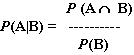
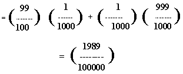
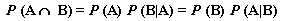
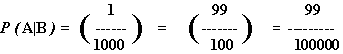
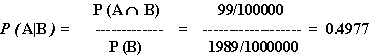

| Requirements |
| Just Perl |
Imagine for a moment a community in Canada's far north, one thousand people with not so much as a caribou between themselves and the North Pole. Let's let the moment grow longer, so that we can fill in a few details. It's suspected that this community might be experiencing an outbreak of a nasty disease called backslashitis, so the public health department has organized a general test of the population.
Backslashitis is fatal, but it can be successfully treated if caught in its earliest stage. However, the treatment is almost as bad as the disease. It's painful, lengthy, expensive, and would require relocating the patient to the nearest major urban center-Edmonton, over two thousand kilometers away. Long-term studies have shown that contaminated regions tend to have one infected individual per thousand.
The test for backslashitis isn't perfect, however. An infected individual will be correctly diagnosed as possessing it 99 times out of 100, while a healthy individual will incorrectly register a positive test result one time in 1000.
Now, we have to make a tough decision: based on the results of this test throughout the population of the community, what course of action will we recommend to people who test positive? Are we willing to advise them to leave their families for months and endure a great deal of hardship for the sake of curing a disease they might not even have?
I'm going to examine this situation in two ways. First, with probability theory, and then with Perl. In this article, I'll work through the simple but often misunderstood notion of conditional probability - a misunderstanding that applies to a lot more than just diseases.
My methodology is fairly straightforward. First, I will identify the relevant events in our scenario. Then, I'll determine what probabilities I know about these events. From here, I will apply a little probability theory to arrive at a guideline for making our tough decisions. Then I'll back up the math with some empirical data generated by a Perl program.
The basic events involved here are easy to pick out from the
scenario given above. The first of these is that a person has
backslashitis. We'll call this event A. The other
event is that the person yields a positive test result, which
we'll call B. Rather than making wholly new labels
for the complementary events of "not being infected with
backslashitis" and "not yielding a positive test result," I'll
just give my previously defined labels stylish flat-top hats:
 and
and  .
.
The probability that a random person the community has the
disease can be read directly out of the scenario:
P(A) = 1/1000. Therefore, P( )
= 999/1000.
)
= 999/1000.
We don't care about P(B). The test only matters
to the extent that it helps us determine whether or not an
individual has backslashitis. What we want to find out is
P(A|B), which is the probability that an individual
is infected given that they have tested positive.
The scenario doesn't tell us this, though. It tells us that
P(B|A) = 99/100, which is the probability that a
test yields a positive result given that the person is infected.
So, P( |A) = 1/100. Also,
P(B|
|A) = 1/100. Also,
P(B| ), the probability that the test
yields a false negative, is 1/ 1000, and the probability that the
test correctly yields a negative result is P(
), the probability that the test
yields a false negative, is 1/ 1000, and the probability that the
test correctly yields a negative result is P( |
| ) = 999/1000.
) = 999/1000.
Really, what we want to know is P(A|B), the probability that a person has backslashitis given that their test result is positive. That's what will help us decide whether to recommend that they pack up their things and head to Edmonton. If P(A|B) is very nearly 1, then it is almost certain that the person has the disease and should be sent to Edmonton for treatment. Since our test is so good, what with P(B|A) = 99/100 and all, we would expect P(A|B) to be equally good... wouldn't we?
Well, let's do the math to find out.
Our primary challenge is to find a way to obtain P(A|B) given the information at our disposal above. The very definition of conditional probability is:

In English, this states that, given that B has occurred, the probability of A occurring is the probability of both A and B occurring, divided by the probability of just B occurring. That's great, but how can we use this to determine P(A|B)? We currently know neither P(A B) nor P(B).
Lucky for us, determining P(B) is pretty easy. The probability of a positive test result is the weighted average of all possible situations that might lead to such a result. In our situation, positive test results can be either a "true positive" or a "false positive."

Now, we need to peg down P(A B). We can compute this with The Multiplicative Law of Probability:

The middle form is what will be helpful to us, seeing as we already know P(A) and P(B|A):

With all this, P(A|B) comes out of the mix:

This is something of a surprising result - even though our test is "99% accurate," the odds that someone with a positive result actually has the disease is only about fifty-fifty.
With this kind of uncertainty, it's difficult to make the clear-cut policy decisions that we might want. But without our analysis, we might have send everyone to Edmonton without a second thought.
A quick Perl program can be useful in analyzing these concepts. First, it's convenient - I don't have a small northern community in my office, but I do have Linux. This will help me compare my analytic results to my simulated experiment as a sort of sanity check. Beyond that, a Perl program can allow me to tweak the parameters, to see if small changes in the numbers make for qualitatively different scenarios.
The program I wrote to test these ideas, prob.pl is essentially a small town medical test simulator. It's a bit more complicated than that, because I have it loop through multiple experiments and multiple towns.
The outermost loop, while (<IN>), parses lines
in the external data file prob.data. Each line is an independent
experiment, with opportunities to change the various parameters:
the number of people in the community, P(A),
P(B|A) and
P(B| ).
).
The next level of looping, for ($j = 0; $j < $trials; $j++), is tied to the first field in prob.data. This is a somewhat artificial "trial smoothing" value. Basically, this variable tells the program to visit N different (yet identical) computer-generated small towns. The program averages the results collected in these N trials in the hopes that this procedure will make the numerically generated data less subject to randomness and more convergent on a true value.
The third and final level of looping, for ($i = 0; $i < $pop; $i++), is simply the number of people tested in a town, as given by the second field in prob.data. The procedure for testing a person is an amazingly straightforward random number test that I managed to make unduly complicated by cramming lots of code all in one place. First, a random number is generated to see if the person is "really" infected with the disease. If so, another is generated to see whether the test yields a true positive or a false negative result. If not, then a random number is still generated but used to see if the test yields a false positive or a true negative.
Just shy of the halfway mark through the program, I use a somewhat rare form of the ?: ternary operator to determine which of two variables is incremented:
( expression ? variable1 : variable2 )++;
After finishing the two innermost loops, the program evaluates a handful of probability statistics and displays the values using a Perl format. We have a top-of-page format containing the title and column headings of our report, and the format proper at the end of the program. The write_form_line() subroutine is called at the end of the outermost loop; the write() statement triggers the format, which is displayed to STDOUT.
Just as the theoretical analysis yielded a somewhat counter - intuitive result, the numerical trials present a few noteworthy points as well. I ran quite a number of these numerical experiments to get a feel for how things work out. Here are some observations. The numerically calculated probability statistics come very close to the theoretically determined ones, but only when the number of trials performed gets very large. After running 50 different trials of our scenario, I found a great deal of variation in the numeric P(A) between trials, ranging from 0 to 0.003. I'm sure that the average converges on the expected 0.001, but that won't be much comfort to the poor schmoe you sent to Edmonton to be poked and prodded.
__END__